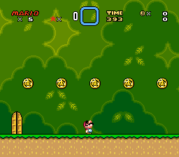
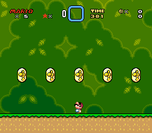
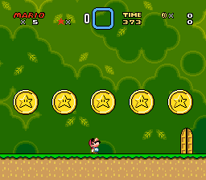
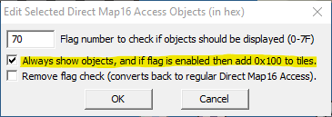
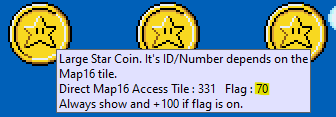
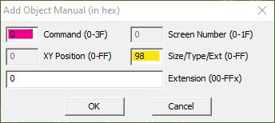
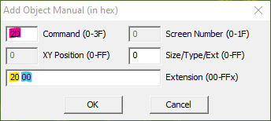

This is a pack of blocks which replicates the Star Coins from the New Super Mario Bros. series but also with features of SMW's own Dragon Coins. They function as a more advanced version of SMW's own Dragon Coins.
These coins make it possible for the creator to make each Dragon Coins unique which in turn makes it possible
for the player to know which coin is what and also makes 100% collection overall easier as keeping track of these
coins also makes it possible to stay them collected even after the player's death.
They can be set to be permanently collected once the player picks them up in general or be only saved when the
corresponding level has been beaten or also when a midway point has been collected. Like in the home series, the
progress of the Star Coins can even be set up to only be permanently collected should the player beat the level
while collecting a midway point only temporarily preserves and will be dismissed should the player switch levels
(this is only recommend when the midway state also is temporal).
Beyond that, a single level can have up to 16 different coins, though using more than 8 Star Coins results in
roughly double the RAM usage.
The Star Coins come in three different sizes: A small 16x16 coin in the same size as a regular coin,
a medium-sized 16x32 which is a Dragon / Yoshi Coin and a 32x32 which is the closest to the Star Coins
in the NSMB series.



There are many different resources which achieve a similar result as Star Coins, most notably Individual Dragon Coin Save. However, they also differ in the implementations so depending on the use-case, you might chose one over the other.
Features of Star Coins:
Features of Individual Dragon Coin Save:
The installation process of Star Coins can get quite complex. In particular, they require multiple other tools besides just Lunar Magic and GPS or PIXI.
To insert the Star Coins, you need the following resources:
The first step you have to do is to insert the patch. It installs the configuration bytes which are read from
the configuration file for the other resources but also adds a Star Coin display for the status bar and modifies
the midway points to preserve Star Coins should the player collects it (when desired).
A list of options can be seen below in star_coins_defs.asm.
Among others, the blocks are the Star Coins themselves. Included with it is a list file which has all the included blocks set up. In case you already have custom blocks inserted, simply copy the content into your list.txt. When using ObjecTool, make sure the page number for the coins is the same as set in the configuration. The other blocks can be inserted on any page.
To save on insertion size (and sanity for the maintainers), the coins use only one block per size as well as a
shared routine for all of them and use the Map16 number to determine the ID as well as the part of a coin.
Similarly, they use their Map16 number to determine the tile they turn into when collected. More specifically,
they turn into the tile on the next Map16 page.
A side effect is that Map16 tiles which point to these coins don't respect use the caller's tile number, not the
referenced ones.
Their graphics are located in ExGFX80.bin which is inserted for BG3. In addition, ExGFX60.bin contains the animation for the 32x32 coin with the animation thereof being found in Sample Level 105.mwl. Note that ExGFX60.bin is global and not supposed to be inserted for AN2.
There also exist three other blocks: One which checks if a specific Star Coin has been collected (much like the Star Coins themselves, they check for the Map16 number to determine their ID), one for the amount of Star Coins collected in total (can be the current level or globally, no Map16 tricks used there) and one which checks whether all coins in the current level have been collected. All of these blocks are examples on what you can do with Star Coins and can be used as a base for other resources.
Since Star Coin sprites don't exist yet, this section has been intentionally left empty for future purposes.
The main bulk of the star coins is handled by UberASM. It handles code for level load (whether the star coins are collected or not) as well as overworld code (e.g. persistence of star coins).
The UberASM codes are prepared for a fresh installation. Simply copy UberASM Tool into its own folder, copy
the uberasm folder from this patch. Then open up macro_library.asm into a text editor
and put a incsrc star_coins_defs.asm into the code (preferably at the very start or very end).
gamemode: 0C ow_load.asm 0E ow_main.asm 11 level_load.asm
In case you already have inserted some gamemode codes, you have put a
jsl star_coins_xxx at the beginning of the code (preferably after the init /
main label).
Alternatively, you can use Fernap's UberASM 2.0
which allows you to insert multiple codes for the same gamemode (though alternatively, you can
insert codes all levels and submaps but that requires changing some labels and merging both overworld
codes).
For a system like this, it makes sense to have the coins to be permanently even after resetting the game. The Star Coins patch will automatically install either patch should you place.
In case you already use SRAM / BW-RAM Plus, what you instead have to do is to take the existing sram_table.asm / bwram_table.asm file and add incsrc ../star_coins_defs.asm somewhere (preferably at the top). Then, at the end of sram_table, add the following defines:
if !max_star_coins >= 9 : dl !star_coin_ram+$07 : dw $018E ;Star coins ram if !max_star_coins < 9 : dl !star_coin_ram+$05 : dw $00CEIn addition, the tables must be properly initialised as well. Put at the end of sram_defaults, the following lines:
dw $0000 ;!game_total_star_coins fillbyte $00 : fill $00C0 ;flags if !max_star_coins >= 9 : fillbyte $00 : fill $00C0 ;extra flags fillbyte $00 : fill $000C ;all star coins flags
Lunar Magic gives the user a possibility to make Direct Map16 Objects conditional as in have them only
appear under certain conditions or change their appearance when certain flags are set. The advantage with
this method is that this is integrated with Lunar Magic and but comes with the downside of having more
limited options (e.g. conditional objects either appear or don't or will use the tiles of the next Map16
page not different to !-blocks) and the insertion is less streamlined due to the lack of a (good) tool
for custom objects, instead relying on a patch.
In this specific case, it also means you have to take care that the Map16 tiles you use match with the ID
of the coins.
To use them, you first must have !use_conditional_map16 in the settings enabled. If you already ran UberASM to insert their codes when you previously had it disabled, make sure to run it again in case.
In order to make the coins to be permanently collected, select the coin, go to Edit and then
select Conditional Direct Map16... This opens up the following window:

The value you enter for "Flag Number" is the value you entered for !conditional_map16_flag
plus the ID of the Star Coin - 1. In addition, if you want to make the Star Coin show an outline after
it was been collected, "Always show objects" is recommend to be set unless you place an outline behind
every Star Coin.
When done correctly, hovering over the coin will show the information you entered to the object:

You can see an example on how they work in the included Sample Level 105.mwl file.
A more difficult to use alternative is ObjecTool. ObjecTool allows you to place objects not to
dissimilar to what SMW has instead of a single tile (or a grouping of tiles with the same pattern)
and even with your own conditionals beyond what's possible with Conditional Direct Map16 Objects.
The downside is that ObjecTool is more difficult to use due to limited support by Lunar Magic (most
notably, the lack of a proper display in the editor) as well as no tool to streamline the insertion
process.
In this specific case, another advantage is that you don't have to make sure the Map16 tiles match
up with the ID.
In order to use ObjecTool, put the necessary files into the objectool folder. Next, open
up custobjcode.asm and place a incsrc star_coins_objects.asm at the top
but below @includefrom objectool.asm. This installs all the necessary code which then
can be called from the object you can use. To make the installation progress easier, some macros
are provided to help set up the objects.
There are two kinds of objects in ObjecTool: The fixed size extended objects and resizeable normal objects and they both have different installation steps
Extended objects are the easy option. These objects are uniform i.e. they can't be resized and also can't be given any extra information but they also are place them and you're done. In ObjecTool, they're labelled CustExObjNN where NN is any value from 98 to FF.
The extended objects have got the macros %star_coin_small(id), %star_coin_medium(id) and %star_coin_large(id) which places a 16x16, 16x32 and 32x32 Star Coin of a certain ID (the value specified in "id"), respectively. In case you're confused, here is an example code on how to use them:
CustExObj98: %star_coin_small(1) CustExObj99: %star_coin_small(2) CustExObj9A: %star_coin_small(3) CustExObj9B: %star_coin_small(4) CustExObj9C: %star_coin_small(5) CustExObj9D: %star_coin_medium(1) CustExObj9E: %star_coin_medium(2) CustExObj9F: %star_coin_medium(3) CustExObjA0: %star_coin_medium(4) CustExObjA1: %star_coin_medium(5) CustExObjA2: %star_coin_large(1) CustExObjA3: %star_coin_large(2) CustExObjA4: %star_coin_large(3) CustExObjA5: %star_coin_large(4) CustExObjA6: %star_coin_large(5)
To place them into a level, press "Insert" on your keyboard or go to "Edit", then to "Insert Manual..."
when you're in the object mode. This will open up the following window:

The most important fields are "Command" (marked in magenta) and Size/Type/Ext (marked in yellow). The
former is the general object number and extended objects always use the object ID 0. To determine
the type of object, you enter a value in the latter field. You there enter the NN value from
CustExObjNN.
The resulting object will appear glitched in Lunar Magic but that's because the editor doesn't support
custom objects aside from its own ones. It should appear fine in-game, though.
Normal objects, on the other hand, can be resized like ledges, turn blocks or direct Map16 objects. In addition, ObjecTool allows the user to pass one extra byte to these objects for more customisation. In ObjecTool, they're labelled under CustObjNN where NN is any value from 00-FF.
The normal object can be created with %star_coin_variable() which uses the second extra byte to determine the ID and size of the coin.
CustObj20: %star_coin_variable()
Like with custom extended objects, custom normal objects too can only be manually inserted. What's different
are the parameters:

Custom normal objects are all objects 2D (this is different to vanilla objects which all have a unique ID) and
for customisation, one is able to use two extra bytes akin to sprites with extra bytes. When using ObjecTool, the
first one (marked in yellow) is to determine the object number and is the NN value from
CustObjNN while the second one (marked in blue) is an optional parameter which can be used for one's
own objects. In this case, the leftmost digit determines the size (0 = small, 1 = medium, 2 = large) while the
rightmost digit sets the ID - 1.
Like custom extended objects, custom normal objects also appear glitched in Lunar Magic but should also appear fine
in-game.
You can see an example on how they work in the included Sample Level 106.mwl file.
If you have any question regarding the Star Coins, it's recommend to ask it in the public first. The best place to ask is on SMW Central, though you can also ask on SNESLab about questions. But make sure you follow the readme first before you ask a question which could have been easily avoided.
Bugs should be preferably reported on GitHub, though
you can contact MarioFanGamer if you don't want to create a GitHub account specifically for reporting bugs.
You can contact him through Discord under the user tag MarioFanGamer#7813 as well as on SMW Central
under the username MarioFanGamer.
When reporting bugs, make sure you follow the following steps:
v1.99 (13/Jan/23):
v1.14 (24/Apr/18):
v1.13 (16/Sep/15):
v1.12 (16/May/15):
v1.11 (4/Jan/15):
v1.1 (22/Dec/14):
v1.0 (20/Dec/14):
v0.2 (14/Dec/14):
v0.1 (14/Dec/14):